This is not just another job. It means standing at the forefront of dual-shore collaboration between China and Canada, participating in the complete journey of top-tier North American medical devices from drawings to mass production. Every inspection report you write, every process optimization you make, will be a real force impacting the health of patients around the world.

Building the future of manufacturing — quality starts with you. As Inertia's Guangzhou manufacturing base continues to grow, we're looking for like-minded engineers and production specialists to join our team in Panyu and build world-class medical device manufacturing capabilities together.
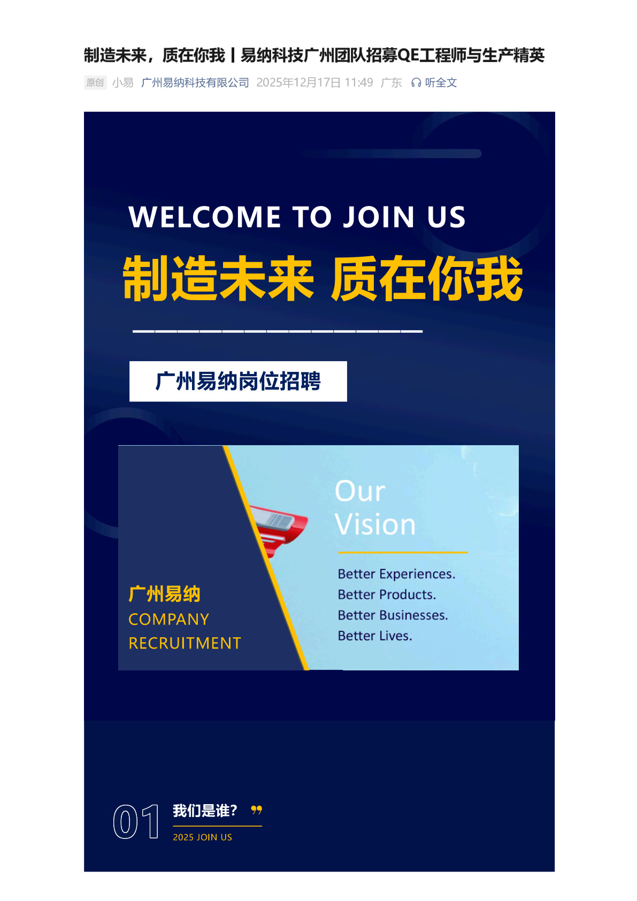
Part 1 Who Are We Looking For? — QE Engineers & Production Talent
Inertia Guangzhou is experiencing rapid growth — our project pipeline has nearly doubled compared to the same period last year. To support this expansion, we are opening multiple key positions, with the most critical being in two directions: Quality Engineers (QE) and Manufacturing Production Specialists.
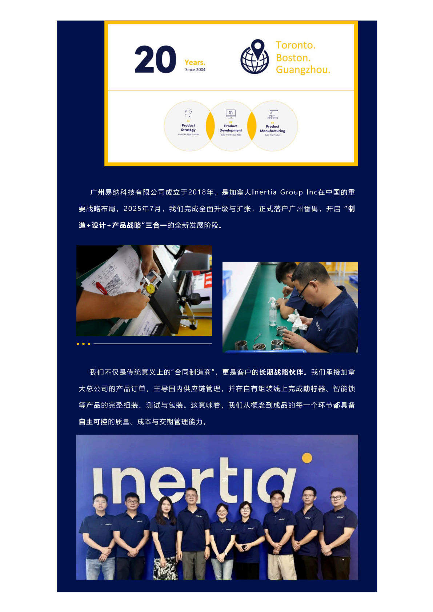
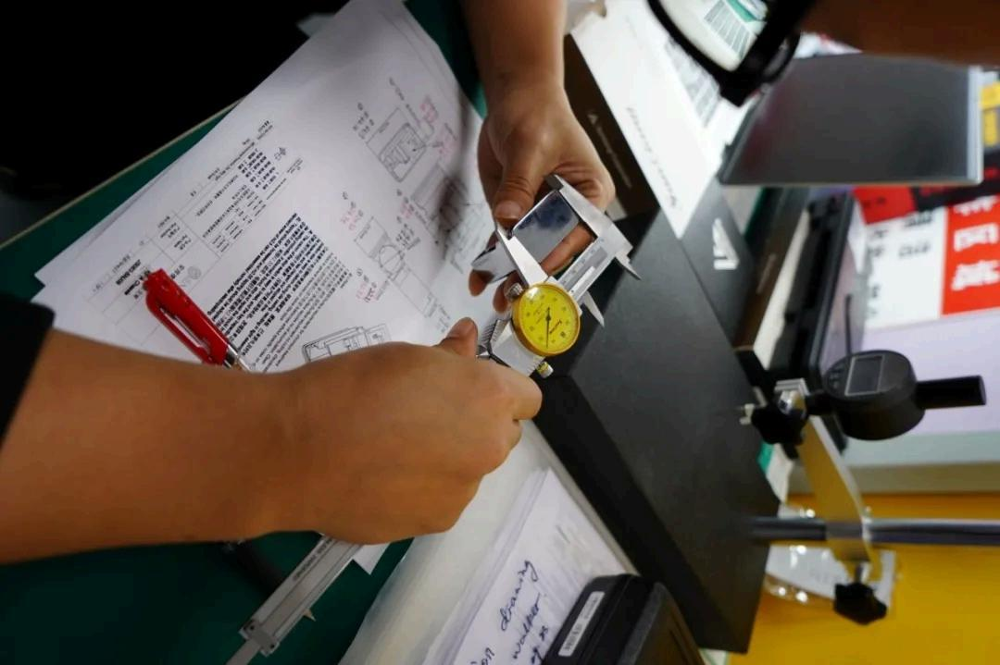
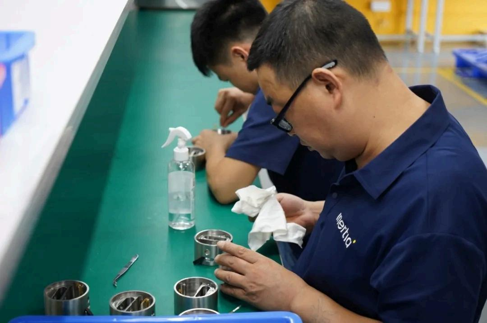
The QE engineers we need go beyond reading drawings and writing reports. In Inertia's quality system, QE is both the gatekeeper and the driver of the entire manufacturing process. You need to understand the quality expectations of North American clients, be able to read English technical documents and quality standards, establish effective controls across IQC, IPQC, and OQC stages, and possess a data-analysis mindset — using tools like SPC, FMEA, and CAPA to drive continuous improvement.
The production talent we need goes beyond operating equipment. In medical device manufacturing, every action on the production line carries implications for patient safety. We look for people obsessed with "doing it right" rather than just "getting it done" — those who understand production discipline under GMP and ISO 13485 environments, who pursue extreme consistency in processes like precision injection molding, cleanroom assembly, and laser welding, and who are willing to keep learning and growing into technical leaders on the manufacturing floor.
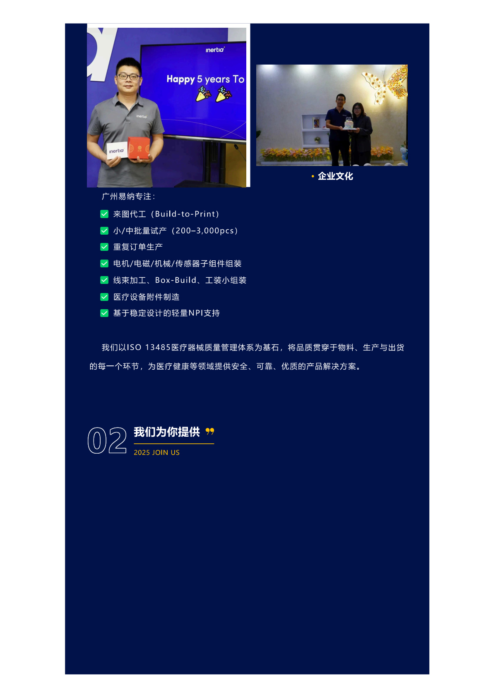
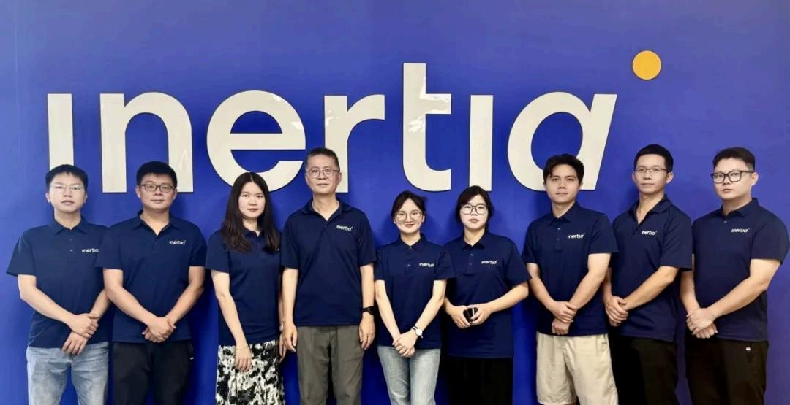
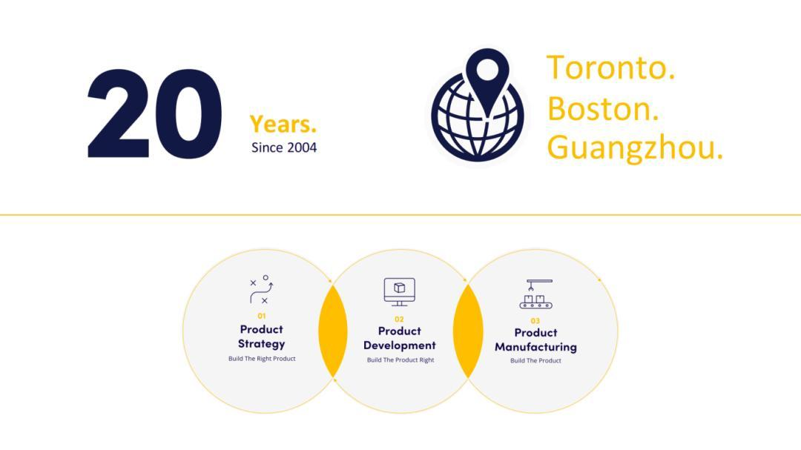
At Inertia, quality is not inspected — it's designed, manufactured, and safeguarded by every engineer who cares deeply about what they do.
Part 2 Why Join Inertia Guangzhou?
In Panyu, Inertia is building a manufacturing base that's different. No traditional contract manufacturing "piece-rate assembly lines" here — what we have is an engineered manufacturing system geared for high-end medical devices, and a genuinely cross-cultural, cross-timezone career development platform.
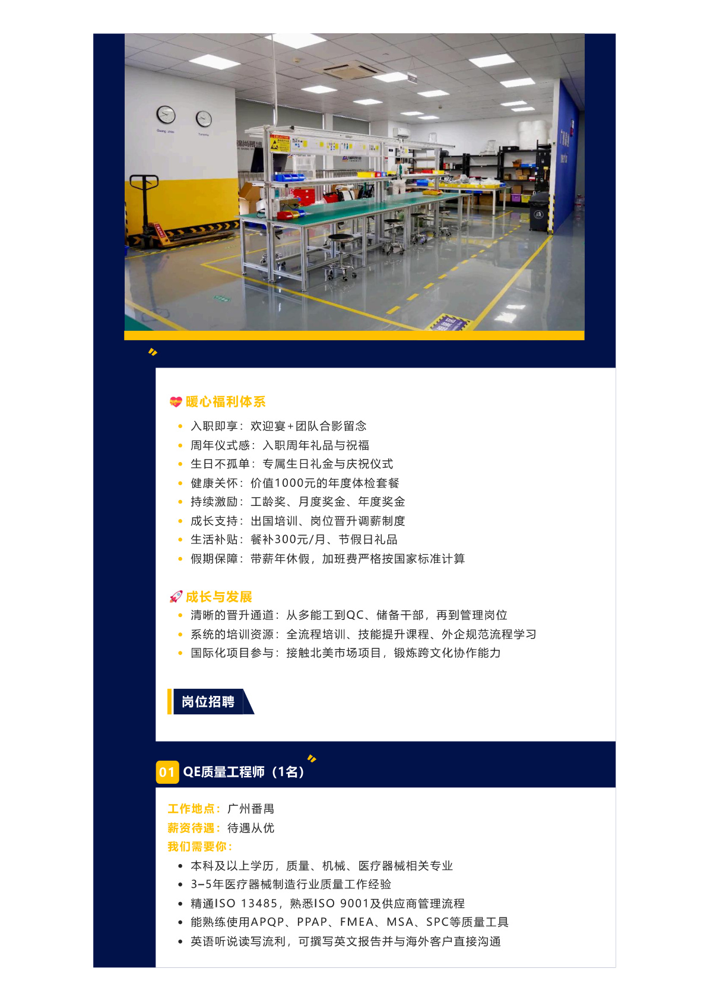
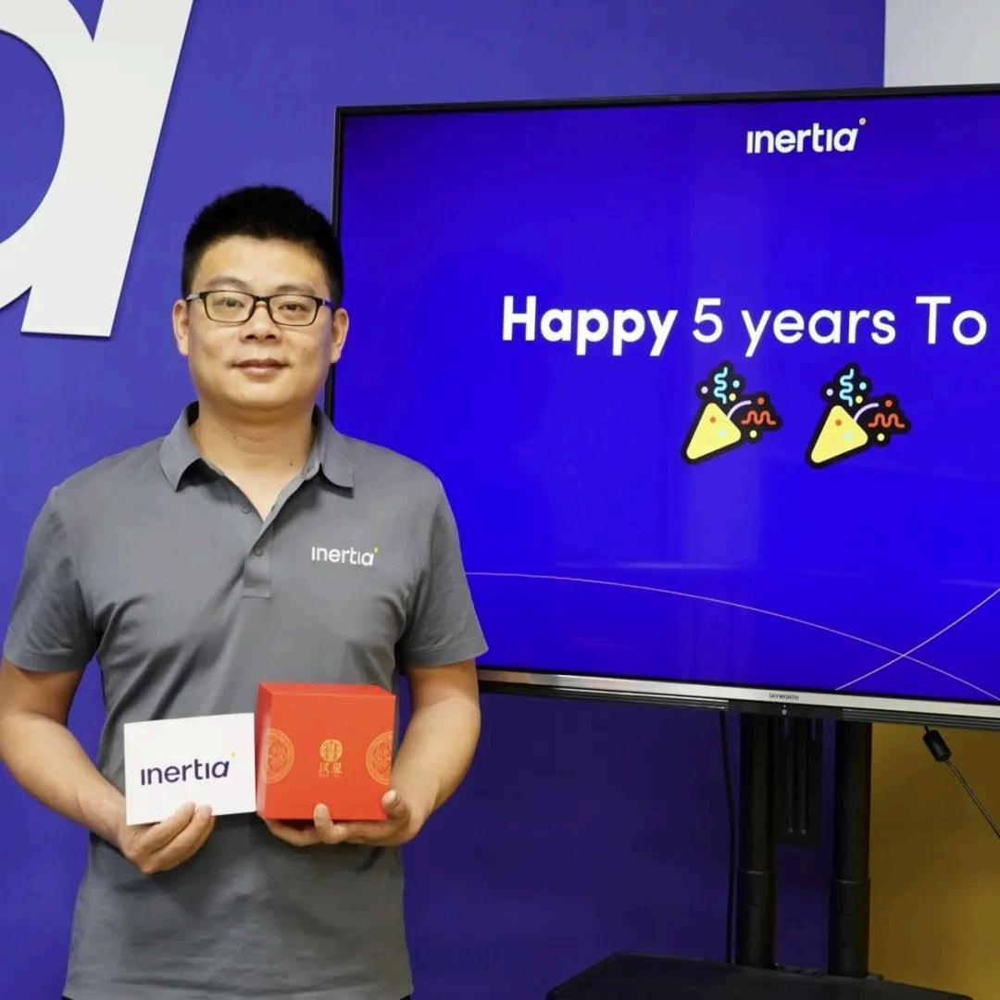
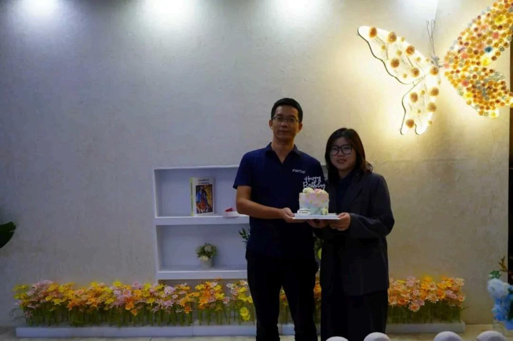
A platform with global perspective and real-world experience. Your daily work will interface directly with North American clients — running quality review meetings in English, reading FDA-related technical documentation, understanding ASTM/ISO standards. This is not a factory "international liaison" role — it's daily immersion in the global medical device supply chain.
A clear technical growth path. From entry-level QC inspection to QE Engineer, then to QMS system management or Supplier Quality Engineering — Inertia provides every quality professional with a defined career ladder. You don't advance by "putting in years" — we value your ability to learn and your actual contributions to solving problems.
The respect and trust of an engineering culture. At Inertia, your professional judgment is heard. Whether you're a newcomer or a seasoned veteran, as long as your logic is sound and your data is clear, your voice carries weight.
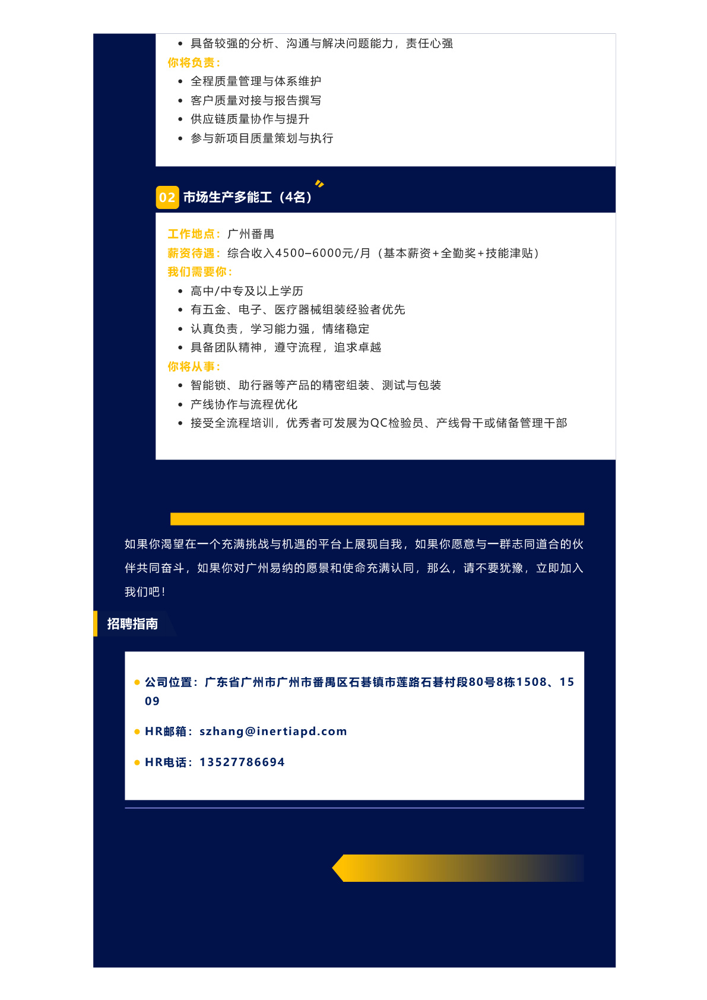
Part 3 Open Positions at a Glance
We currently have the following key positions open at our Guangzhou Panyu site (please refer to official job descriptions for full details):
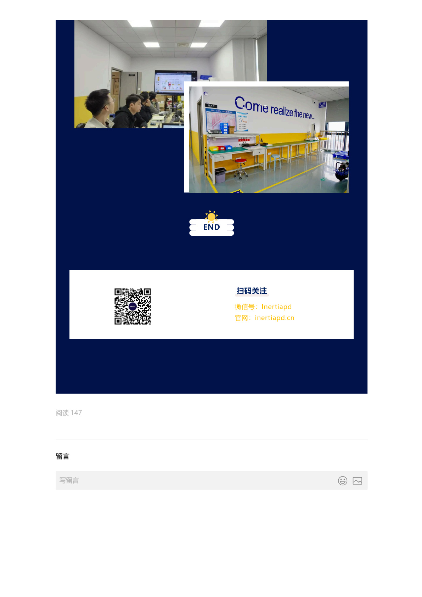
QE Quality Engineer (2 positions) — Responsible for incoming, in-process, and outgoing quality control; developing inspection standards and work instructions; leading non-conformance review and CAPA tracking; participating in customer quality communications and complaint handling. Requirements: associate degree or above, 2+ years of manufacturing quality experience, English reading and writing capability.
Production Supervisor (1 position) — Responsible for daily management of medical device assembly lines, including production scheduling, personnel allocation, efficiency improvement, and on-site 5S maintenance; ensuring production processes comply with GMP and ISO 13485 requirements. Requirements: 3+ years of cleanroom management experience.
Injection Molding Technician (2 positions) — Responsible for precision injection molding machine setup and maintenance; participating in mold trials and process optimization; ensuring product dimensions and appearance meet medical-grade requirements. Requirements: familiar with engineering plastics characteristics; medical or optical injection molding experience preferred.
Quality Inspector (3 positions) — Performing incoming, in-process, and outgoing inspections; recording inspection data; identifying and quarantining non-conforming products. Requirements: detail-oriented and responsible, able to read mechanical drawings; medical device industry experience preferred.

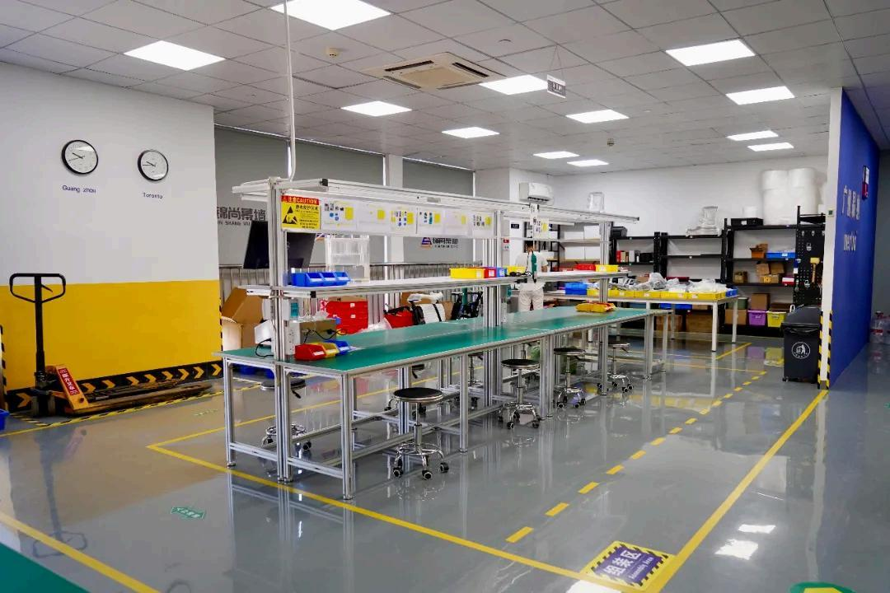
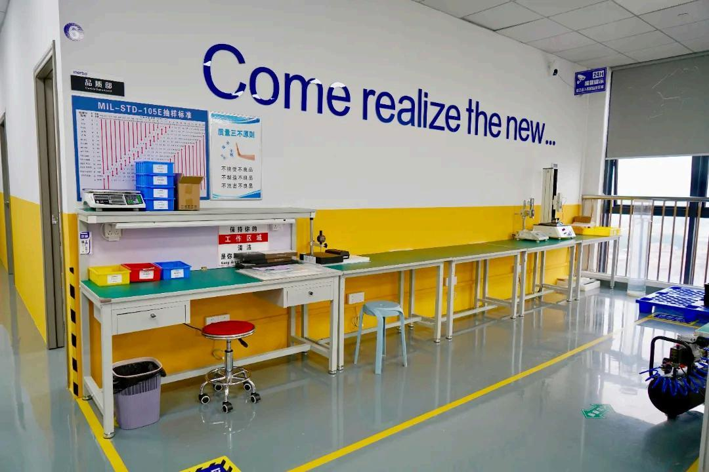
At Inertia, everyone is a guardian of quality. We're not just filling positions — we're looking for people who want to inject new standards and new meaning into "Made in China." If you believe manufacturing can have more dignity, more technical depth, and more global impact — this is your stage.
Building the future of manufacturing — quality starts with you. This is not a slogan. It's a conviction Inertia lives by every single day. If you're ready, send your resume to GITSale1@inertiapd.com. We look forward to meeting you in Panyu.